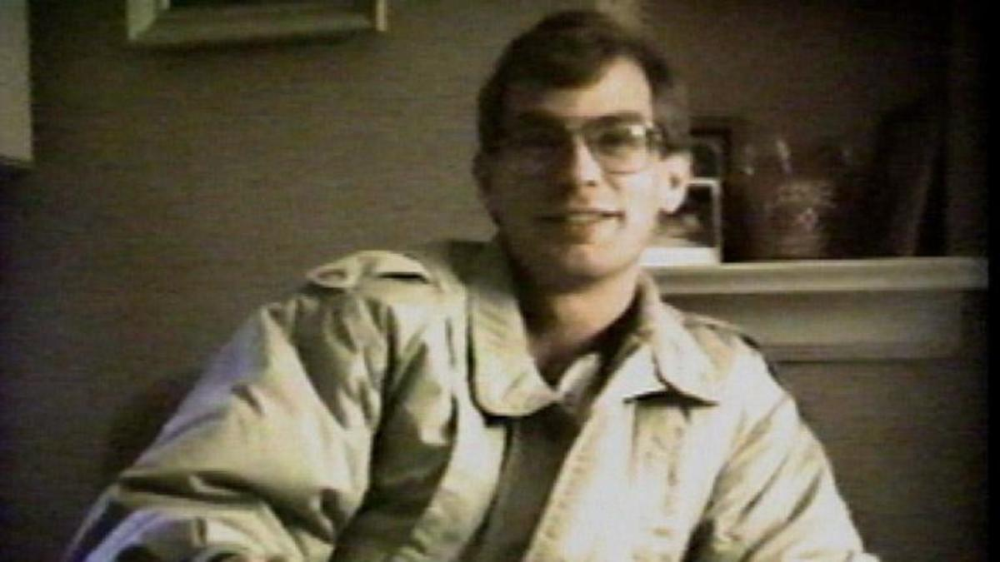

Originally published on The Dahmer Case Substack
Date: February 4, 2025
Jeff Dahmer was not a serial killer. He was a victim of human trafficking.
This conclusion is not based on speculation but on evidence gathered from public records, Freedom of Information Act (FOIA) requests, declassified documents, and undeniable video evidence.
This is all open-source intelligence. You can verify these findings yourself because we tell you where to look.
The death of Steven Hicks, Jeff's first alleged victim, was not a murder but an accident. The sources suggest that alcohol and a motor vehicle driven by Jeff may have been involved. For more information, see Jeff Dahmer's $10 Million Judgment: Why Did His Parents Escape Liability?
The Dahmer family was in a state of turmoil at the time of Steven Hicks' accidental death. Lionel and Joyce Dahmer were in the process of divorcing, and there was a custody battle over Jeff's younger brother, David. Lionel was living in a motel with his then-girlfriend, Shari. Given these circumstances, it looks like the family covered up the accidental death of Steven Hicks to avoid having to deal with it. In other words, they had enough problems and didn’t need another one.
Given that the key players were all connected to the Archdiocese of Milwaukee, it’s possible that Jeff confessed to someone associated with the Archdiocese. That confession led to Jeff eventually starring in a fake news story about a “gay serial killer”.
A request to the Wisconsin Circuit Court revealed that the 15 signed guilty pleas that were televised do not actually exist. Without any signed guilty pleas, it cannot be said that Jeff Dahmer murdered anyone in Milwaukee.
Jeff Dahmer’s confession contained another man's Social Security Number (SSN). That man’s name is Eric Lamar Stanley. If you have access to Ancestry.com, you can verify this for yourself. The Milwaukee Police knew this because the FBI told them. Despite this, the SSN was never corrected on the confession. For more information, see Jeff Dahmer's Confession Contains Another Man's Social Security Number.
For more information, see The 15 Guilty Pleas Jeff Dahmer Supposedly Signed Do Not Exist.